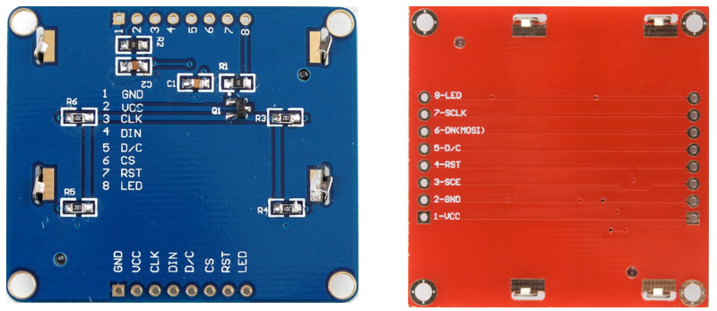

üôã FAQ
Contents
üôã FAQ#
General#
How are the bonus points used for my final grade?#
The bonus points earned in your labs and homework assignments will be used for your other labs and homework assignments, respectively.
Here is how to calculate the final lab grade. Let \(L_k\) be your Lab \(k\) grade. The final lab grade, \(L_f\) will be
Suppose we have five labs and each lab is 50 points. If your lab scores are 50, 48, 52, 50, and 48. Then, your final lab grade will be min(250, 248) = 248. If your scores are 50, 50, 48, 52, and 52, your final lab grade will be min(250, 252) = 250. The bonus points earned in labs will only be used for your final lab grade. They can’t be transferred to homework, GRs, or the final project.
Your final homework grade will be calculated in the same way. The bonus points earned in homework will only be used for your final homework grade.
There are also bonus points in the final project, which can be used towards the final grade. If you earn 250/250 for the final project, the contribution of your final project to the final grade will be 25% because the final project is worth 25% of the final grade. If you earn 260/250 for the final project, the contribution of your final project towards the final grade will be 26.0% - you can change your final letter grade. Note that you are eligible for the final project bonus points only if you complete all the lab demos.
What is the XDS110 USB Debug Probe error shown below?#

This error simply means that your MSP432 board is not connected correctly to your computer. Check the USB cable!
What is build error #10234-D: unresolved symbols remain?#
{kind=link}
The linker generates the error when it cannot find the definition for the symbol. This typically happens if an object file or library containing the definition for the symbol is not provided to the linker. The build output in the CCS build console should provide information on which object files and libraries are passed to the linke
In short, you MISSPELLED (including capitalization error) a variable name or function name!
Use autocompletion to avoid such problems: CCS Autocompletion in the FAQ.
What is Load Program Error?#
{kind=link}
The binary file (*.out) does not exist because you probably had a compile error as shown below.
{kind=link}
Fix the compile error first.
CCS#
How to comment out a block of code in CCS?#
To comment out and uncomment multiple code lines, Ctrl+/
Is auto-completion available in CCS?#
Yes, it is, and please use it extensively. You can easily avoid compile errors.
Type a few letters and press Ctrl+Space. It will show you a few options you can choose.
{kind=link}
- Choose one and hit Enter. Then, it will show you the declaration of the function you have chosen.
{kind=link}
- You can also use it for both functions and variables. It is particularly useful for registers.
{kind=link}
How can I rename a variable/function name in the entire project without finding them?#
It is called refactoring. Sometimes you want to rename identifiers for code symbols, such as local variables, functions, properties, and types. In such cases, you want to rename something safely without having to find all instances and copy/paste the new name. Here is how you do it:
Right-click on a variable and explore Refactor > Rename (or Alt + Shift +R). Enter a new name and press Enter.
{kind=link}
It will find all instances of the variable/function and change them in the **entire** project.
Why do I have a compile error if I copy & paste code from a pdf file to CCS?#
If you copy & paste code (texts) from pdf, it may have hidden characters that CCS does not understand. So, NEVER copy and paste texts from pdf files to CCS. If you have an error message similar to the figure below, it is probably due to the hidden characters copied from the pdf.
{kind=link}
How can I change Serial Terminal Buffer size?#
In the menu bar, go to Window > Preferences > Terminal and change the buffer lines.
{kind=link}
Are there git clients other than Git Bash?#
CCS comes with built-in GIT, and it can be opened from CCS menu > View > Other > Git > Git Staging. You can commit and push at the same time.
There are many graphic user interface (GUI) clients out there. Check out https://git-scm.com/downloads/guis.
Hardware/Software Interface#
Why does my bump sensor not reset to 0 after the sensor is decompressed?#
Your pull-up/down resistors may not be configured appropriately.
I have two switches on my robot. Which one should I use?#
There are two switches on your robot as shown below. Keep the slide switch in the yellow rectangle in the off position and use the button switch in the yellow circle to turn the robot on and off. Do not use the slide switch because it is very fragile.

How to run the hardware diagnostics tool for hardware issues on my robot?#
In some cases, it may be unclear whether the issue lies with your code or hardware. Here’s how to test your hardware.
Note
You need 6 AA batteries to run this tool.
Load diagnostics tool
Download
HardwareDiagnostics.out.Download the UniFlash flash programming tool and install it on your computer.
Run UniFlash.
Connect the LaunchPad to your computer. UniFlash will detect your LauchPad as shown below. Click
Start.In UniFlash, click
Browseand select theHardwareDiagnostics.outfile you downloaded on your computer.Click
Load Image. If you are asked to update the firmware, you must update it.Once the hardware diagnostics program is successfully flashed on your microprocessor, UniFlash will display
[SUCCESS] Program Load completed successfully.
{kind=link}
Turn on chassis
Disconnect the USB cable.
You must use the button switch to turn on the chassis power. Please read this section.
Insert 6 AA batteries and turn on the robot.
Test LCD & LED
The first test is the LED and LCD tests.
It will blink 6 LEDs and display texts and numbers as shown below.

To change the contrast of the LCD, press the left and right switches located on the sides of the LaunchPad.
Press one of the six bump switches on the front of the robot to move to the next test.
Test reflectance sensors
Starting in Fall 2023, we don’t use the reflectance sensors. Jump to the next test.
Block the reflectance sensors on the bottom of the robot one at a time.
The corresponding binary value on the LCD will become zero as shown below.

Test bump switches
To test each bump switch, press one of the six bump switches at a time.
Press the bump switches one at a time.
The corresponding binary value will become one as shown below.

Hold the robot before moving to the next test because the motors will be running.
Press one of the switches on the LaunchPad to move to the next test.
Test motors
If your motor is not running, slowly rotate it to kick in.
As motors run, the measured speeds will be displayed on the LCD as shown below.
The motor speeds should be around 80 rpm and the errors are supposed to be fluctuating.

Press one of the six bump switches to move to the next test.
Test distance sensors
The next test is the Distance Sensor test.
If there is no object in front of a sensor, the distance value should be 800 mm.
As you move an object close to a sensor, the LPF values should increase and the distance value should decrease as shown below.

Press one of the six bump switches to move back to the first test.
There is also an online tool from TI to test your hardware. You can use this tool to test your line sensors, bump sensors, motors, and LEDs. You cannot test the IR distance sensors and Nokia LCD. Here is the link
How to interface the Nokia LCD with LaunchPad?#
Before you mount your LCD on the robot, you want to test the connection between the LCD and your LaunchPad. Using jumper wires provided by your instructor, connect your LCD to LaunchPad as shown below. Do not connect the LED backlight to 3.3 V. The LEDs will draw too much current.
{kind=link}
{kind=link}
If you have a red LCD, connect it to your LaunchPad using the following interface.
// Red SparkFun Nokia 5110 (LCD-10168)
// -----------------------------------
// Signal (Nokia 5110) LaunchPad pin
// 3.3V (VCC, pin 1) power
// Ground (GND, pin 2) ground
// UCA3STE (SCE, pin 3) connected to P9.4
// Reset (RST, pin 4) connected to P9.3
// Data/Command (D/C, pin 5) connected to P9.6
// UCA3SIMO (DN, pin 6) connected to P9.7
// UCA3CLK (SCLK, pin 7) connected to P9.5
// backlight (LED, pin 8) not connected,
// consists of 4 3.3 V white LEDs, which draw ~80mA total
If you have a blue LCD, connect it to your LaunchPad using the following interface.
// Blue Adafruit 338 Nokia 5110
// ---------------
// Signal (Nokia 5110) LaunchPad pin
// Ground (Gnd, pin 1) ground
// 3.3V (Vcc, pin 2) power
// UCA3CLK (Clk, pin 3) connected to P9.5
// UCA3SIMO (Din, pin 4) connected to P9.7
// Data/Command (D/C, pin 5) connected to P9.6
// UCA3STE (CS, pin 6) connected to P9.4
// Reset (RST, pin 7) connected to P9.3
// backlight (LED, pin 8) not connected,
//consists of 4 white LEDs which draw ~80mA total
To test your connections, run the
HardwareDiagnosisproject explained in Homework 1.You should be able to see messages on the LCD. If not, check your connections between the LCD and the LaunchPad.
Mount the LCD on the LaunchPad using a hex standoff in your box as shown below.
{kind=link}